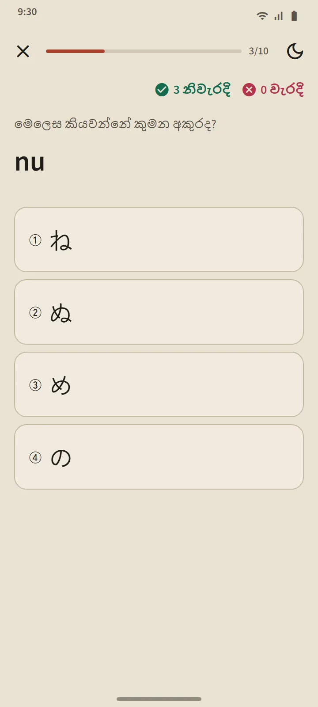

පාඩම් ලැයිස්තුවක් ලෙසද ක්රියා කරන වගුවක්
හිරගනා සහ කතකනා පිටු විවෘත වන්නේ මුල් පිටුවේ “ජපන් භාෂාවේ මූලික කරුණු” කොටසෙනි. ඉහළ ඇති සාරාංශ කාඩ්පත ඔබ දන්නා අක්ෂර ගණන් කරයි; පහළ වගුව කණ්ඩායම් තුනකි: මූලික (අක්ෂර 46), ඝෝෂ (dakuten සහ handakuten), සහ සංයුක්ත (きゃ, しゅ, ちょ ආදිය). පිරවූ කොටුවක් යනු දන්නවා ය, රේඛා සහිත කොටුවක් යනු සිදුවෙමින් පවතින බවය.

පේළියකට පාඩමක්
වගුවේ සෑම පේළියක්ම එක් පාඩමකි: ඔබට තට්ටු කර ශබ්දය ඇසිය හැකි අක්ෂර කොටු, රෝමාජි, දන්නා බවට සලකුණක්, සෑම අක්ෂරයකම ඉරි අනුපිළිවෙළ, සහ “ඔබට කියවිය හැකි වචන”: එම පේළිය දක්වා ඉගෙන ගත් අක්ෂරවලින් පමණක් සෑදූ සැබෑ ශබ්දකෝෂ වචන, ඔබ මුලින් කියවීමට උත්සාහ කරන ලෙස රෝමාජි බොත්තමක් පිටුපස සඟවා ඇත. “මෙම පේළියේ ප්රශ්න” බොත්තමක් පාඩම අවසන් කරයි.

කියවීමේ නීති
සෑම වගුවකම අවසාන කණ්ඩායම ආධුනිකයන් පැකිළෙන නීති පැහැදිලි කරයි: හිරගනාවල කුඩා っ සහ දිගු ස්වර; කතකනාවල දිගු ලකුණ ー, කුඩා ッ සහ ණය වචන සංයෝජන (ファ, ティ, ウィ). සෑම නීතියකටම ඔබට කියවිය හැකි උදාහරණ වචන ඇත.
ප්රශ්න දහයේ ප්රශ්නෝත්තර, නැවත සැලසුම් කිරීමක් නැත
කානා ප්රශ්නෝත්තරය ප්රශ්න වර්ග තුනක් භාවිත කරයි: අක්ෂරයෙන් රෝමාජි වෙත, රෝමාජි වෙතින් අක්ෂරයට, සහ ශබ්දයෙන් අක්ෂරයට. අක්ෂරයක් පිළිවෙළින් තුන් වතාවක් නිවැරදිව පිළිතුරු දුන් පසු දන්නවා බවට පත්වන අතර, වරදක් වුවහොත් ඉගෙන ගනිමින් වෙත පහළට වැටේ. වචන සහ කන්ජි මෙන් නොව, අක්ෂර නැවත සැලසුම් නොකෙරේ: ඔබට ඒ සියල්ල කියවිය හැකි වූ පසු, වගුව නිම වේ. ප්රශ්නෝත්තර සාරාංශය ඔබේ ලකුණු, අලුතින් දන්නා අක්ෂර සහ ඔබ වැරදුණු ඒවා පෙන්වයි.

මෙතැනින් පටන් ගන්න
ඔබ යෙදුම මුලින්ම විවෘත කරන විට, ඔබ ශුන්යයේ සිට අරඹනවාද නැත්නම් දැනටමත් හිරගනා කියවිය හැකිද යැයි එය අසයි. ආධුනිකයන්ට මුල් පිටුවේ පළමු පියවර ලෙස “හිරගනා හඳුනා ගන්න” ලැබෙන අතර, ඉන්පසු පළමු වචන 20, පළමු ව්යාකරණ පාඩම, පළමු කන්ජි සහ පළමු පුහුණු විභාගය ලැබේ.